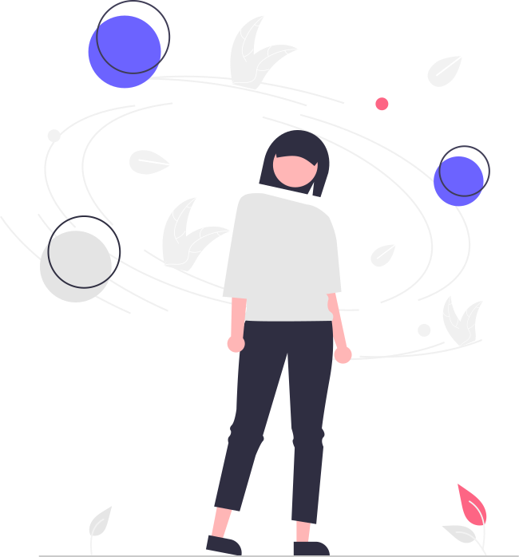

Let's Get Started
Complete your profile to receive personalized results and insights about your personality type.

Ready To Discover Yourself?
40 carefully crafted questions await
Progress
1 of 40
Question 1
Positive
Choose the statement that best describes you
Your Personality Profile
Discover your unique personality composition
Koleris
0%
Decisive • Leader
Sanguinis
0%
Social • Enthusiastic
Melankolis
0%
Thoughtful • Detailed
Phlegmatis
0%
Peaceful • Balanced
Detailed Breakdown
| No | Type | Trait | Category |
|---|